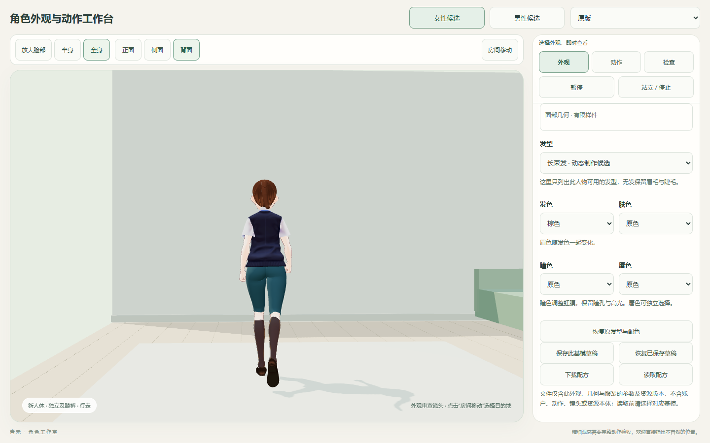
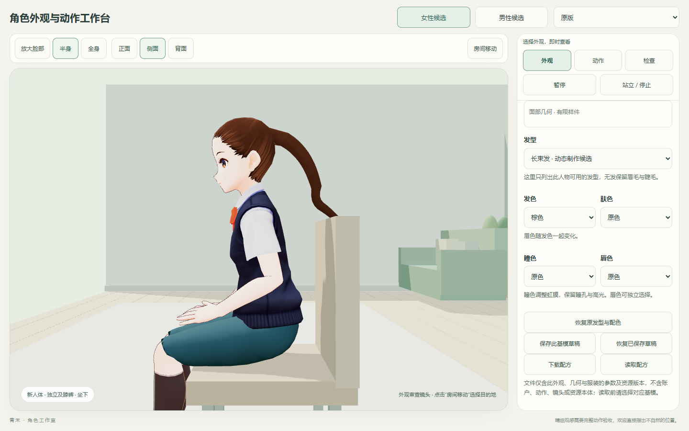
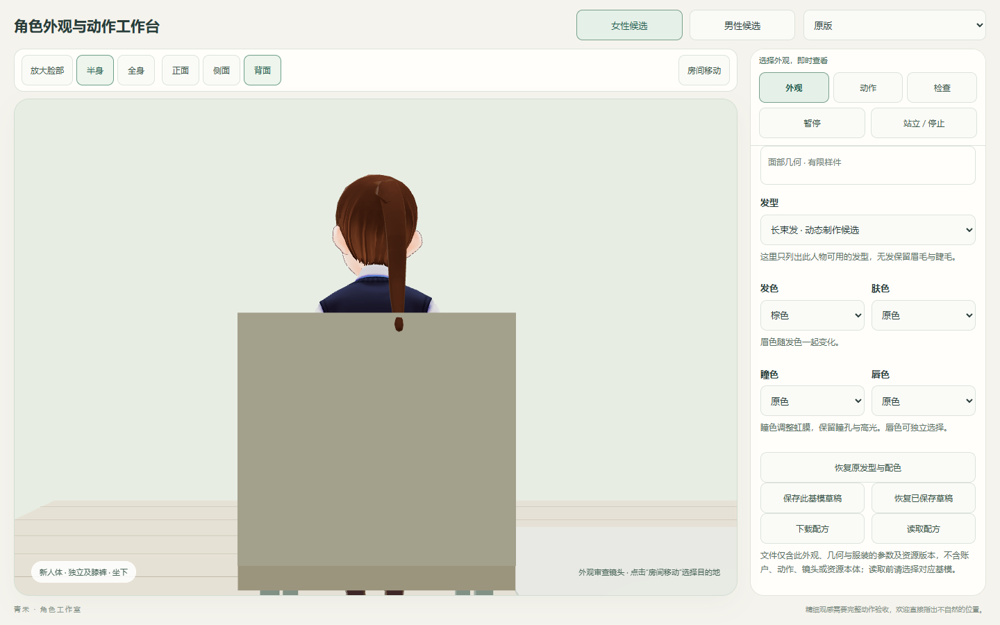
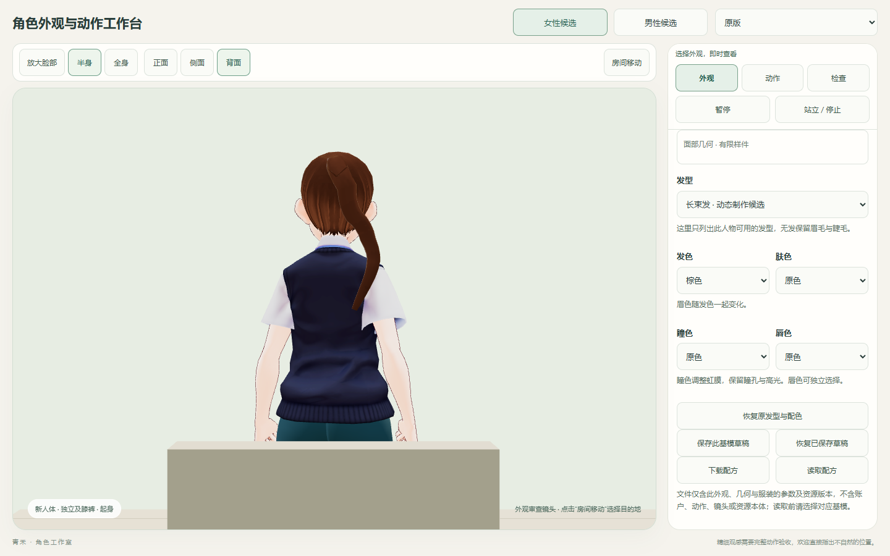
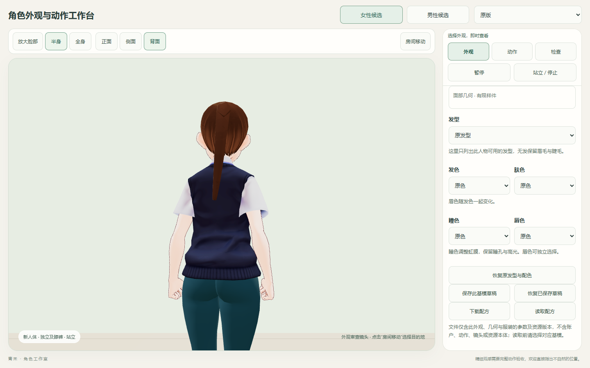
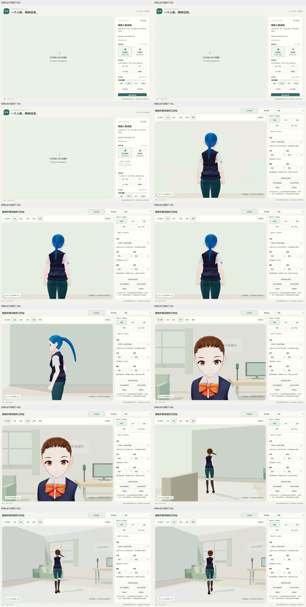
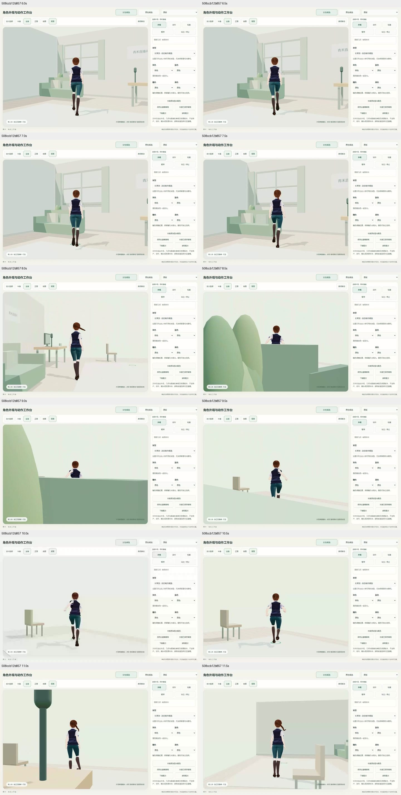
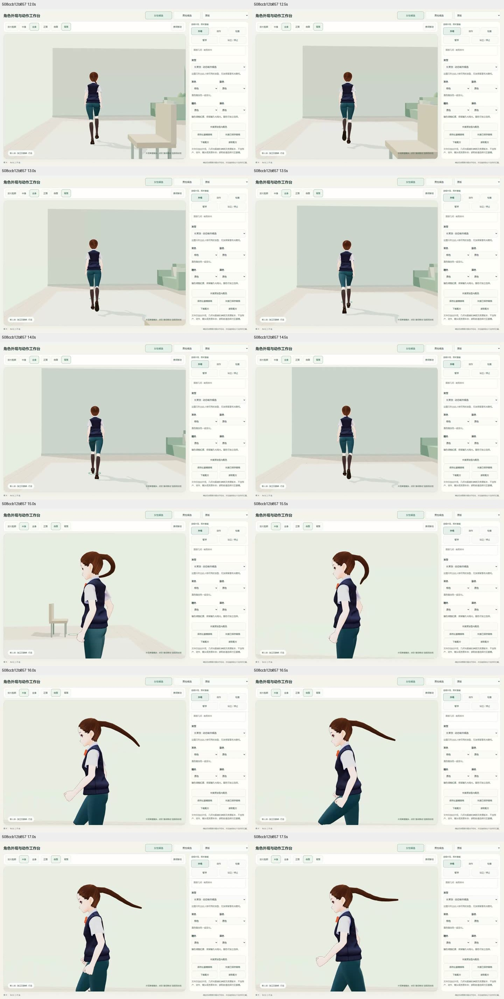
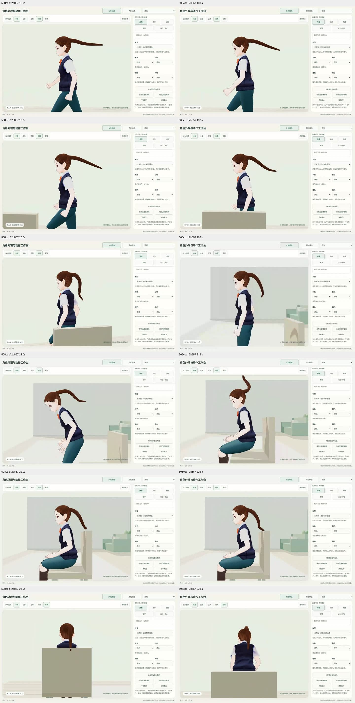
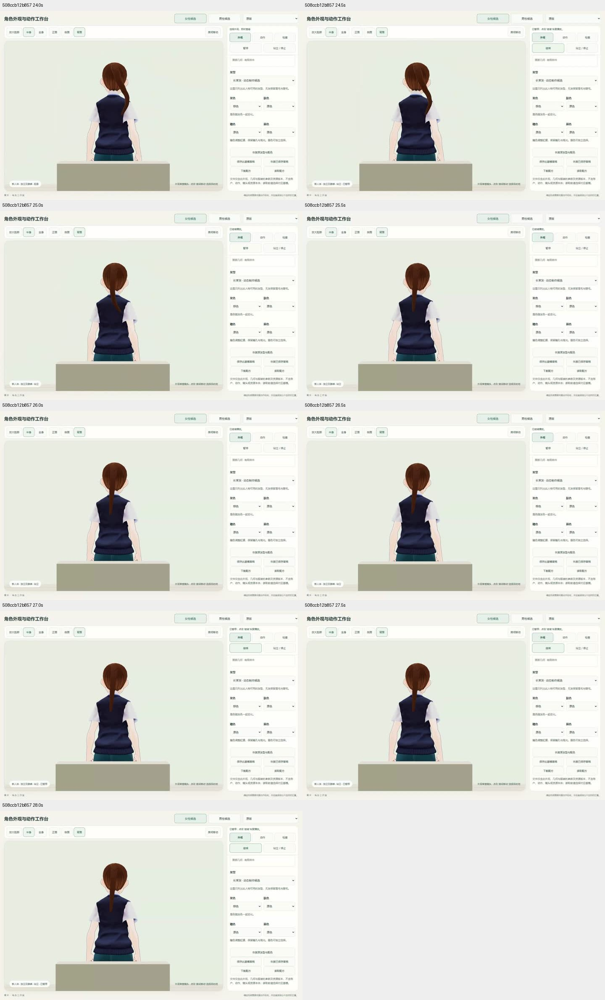

构建 508ccb12b857 · 源码 5ba8df87ab13c4ae7760c6b19e5b9d6ebd79ab8c · 观感未通过。
发根连接已在侧面原图复查；椅背仍有约19mm局部穿入，未通过接触验收。保留完整正常速过程，继续定位端点与整段碰撞差异。
原女性样件已记录实际多骨蒙皮网格、官方 spring manager，以及行走、跑步、转向、坐起、暂停和动态开关。卸载重载、同身体对照实例隔离、新上下文 v7 加载失败保留及重试有技术记录。
原片包含刻意暂停、关闭动态和实例隔离检查，其余移动动作按 1× 播放。本页保留上述审查结论，后续修订须保留各自原图、录像和构建身份。
原始技术报告及完整 rAF 记录 · 原始 v7 配方 · 源文件哈希与抽帧索引 · 包装脚本





实际应用 rAF 时间戳间隔原始记录 4195 项，其中 0 项非正间隔排除并保留在索引中。对 4195 个正间隔汇总，中位 6.10 ms，P95 6.20 ms，最大 169.80 ms。统计直接来自本次开发机短录制，包含截图、加载、暂停及生命周期检查，不能据此确认普通电脑性能或逐帧 spring CPU 耗时。




